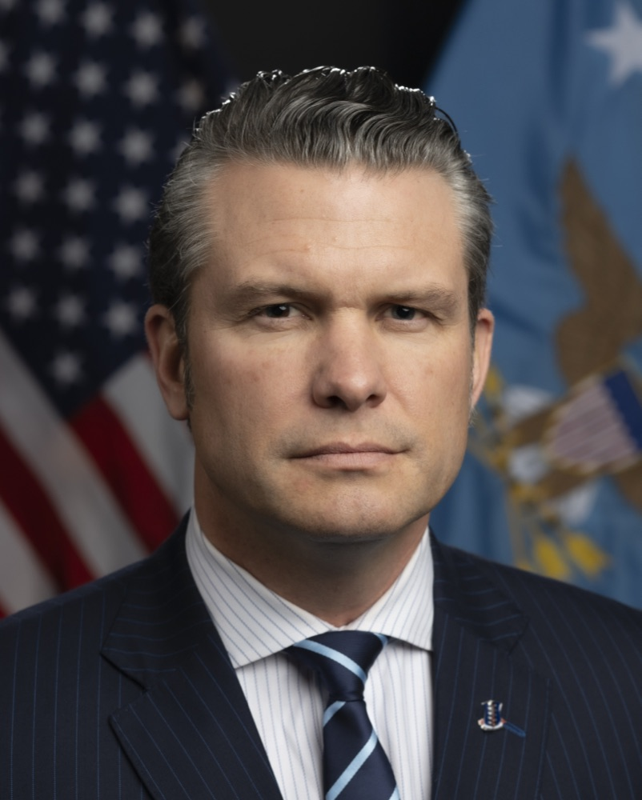

Executive Summary
2026년 8월 27일 목요일 저녁, 캘리포니아 북부지구 연방지방법원의 Rita Lin 판사가 국방부의 앤트로픽 공급망 위험 지정을 위법이라고 판단했습니다. 근거는 세 갈래였습니다. 수정헌법 1조가 금지하는 보복, 수정헌법 5조가 요구하는 적법절차의 생략, 그리고 행정절차법이 말하는 자의적이고 재량을 남용한 처분입니다.
딱지가 붙은 계기는 모델의 결함이 아니었습니다. 앤트로픽은 완전 자율무기와 미국 시민 대상 대량감시 두 가지에 선을 그었고, 국방부는 그 선을 지우라고 요구했습니다. 협상이 깨지자 국방부는 주로 적대국과 연계된 공급업체에 쓰이던 범주를 미국 기업에 적용했고, 그 뒤 방산 공급망 전체가 클로드를 걷어내기 시작했습니다. 국방부는 이 다툼이 살상무기나 대량감시에 관한 것이 아니며 민간 기업이 정부의 기술 사용 방식을 지정할 수는 없다고 반박해 왔습니다.
딱지가 붙고 번지고 걷히기까지 여섯 달이 걸렸고, 그사이 방산 공급망이 실행한 교체 작업은 판결로 되돌아오지 않습니다. 벤더 심사표에 적힌 위험 항목 한 줄이 무엇을 근거로 삼는지 되물어야 하는 이유입니다. 워싱턴 D.C.에서 진행 중인 별개 소송은 아직 끝나지 않았습니다.

주요 수치
출처: TechCrunch (2026-08-28) 및 CNBC (2026-03-04)
0건
인정된 기술적 위협 근거
판사는 앤트로픽이 국방부에 넘긴 기술에 백도어 접근 수단을 갖고 있지 않다는 점에 다툼이 없다고 적었습니다
2억 달러
문제가 된 국방부 계약
클로드가 정부 기밀망에 처음 배치된 주요 모델이 된 계약입니다. 앤트로픽은 2024년 말 팔란티어와의 협력으로 국방부 생태계에 들어갔습니다
10곳
클로드를 걷어낸 방산 포트폴리오사
J2 벤처스 한 곳의 포트폴리오만 헤아린 숫자입니다. 지정 닷새 만에 국방 용도의 클로드를 다른 모델로 대체하는 절차에 들어가 있었습니다
6개월
연방기관에 주어진 전환 기한
국방부 밖의 재무부와 국무부, 보건복지부도 직원들에게 클로드에서 옮겨 가라고 지시했습니다
법원은 이 딱지를 보복이라고 적었다
Rita Lin 연방지방법원 판사는 국방장관 Pete Hegseth가 앤트로픽을 국가안보 위협으로 규정한 행위를 수정헌법 1조를 위반한 위법한 보복으로 봤습니다. 같은 판결문에서 그 결정이 자의적이고 재량을 남용한 것이라고 판단했고, 수정헌법 5조가 요구하는 적법절차도 앤트로픽에게 주어지지 않았다고 적었습니다. 하나의 조치에 서로 다른 법적 결함 세 개가 겹쳤습니다.

판사가 본 진짜 동기는 안보가 아니었습니다. 판결문은 "정부의 말과 행동은 문제 된 조치들이 정부를 비판한 앤트로픽의 오만함을 공개적으로 본보기 삼으려는 욕구에 근거했음을 확인해 줍니다"라고 적었습니다. 안보라는 단어의 쓰임도 그냥 두지 않았습니다. "국가안보를 공허하게 불러내는 것이 정부 비판자를 처벌하고 보복할 백지수표가 되지는 않습니다."
다만 판결은 정부가 벤더를 고를 권한 자체를 부정하지 않았습니다. Lin 판사는 이렇게 선을 그었습니다. "국방부가 원하는 AI 벤더를 고를 자유가 있다는 데는 다툼이 없지만, 앤트로픽에 부과된 광범위한 조치들이 불법이고 근거가 없었다는 것을 증거가 보여 줍니다." 위법한 것은 벤더를 안 쓰겠다는 선택이 아니라, 위험 등급을 붙이고 그 등급을 연방기관 전체와 모든 협력사에까지 강제한 방식이었습니다.
앤트로픽 대변인은 TechCrunch에 보낸 성명에서 판결을 환영한다고 밝혔습니다. "이 공급망 위험 지정이 위법하다는 법원의 판단을 환영합니다. 우리는 국가안보를 위해 AI를 활용하고 모든 미국인이 이 기술의 혜택을 누리도록 정부와 생산적으로 협력하는 데 계속 집중하겠습니다." TechCrunch는 국방부에 논평을 요청해 두었다고 밝혔습니다.
지켜진 가드레일이 위험 항목이 되기까지
앤트로픽은 2024년 말 팔란티어와의 협력으로 국방부 생태계에 들어갔습니다. 그 몇 달 뒤 2억 달러 규모 계약을 통해 클로드는 정부 기밀망에 배치된 첫 주요 모델이 됐습니다. 다툼의 씨앗은 그 계약에 붙은 두 개의 선이었습니다. 완전 자율무기에 쓰지 않을 것, 그리고 미국인을 대상으로 한 대량감시에 쓰지 않을 것. 2026년 2월 Hegseth 장관과 Dario Amodei 대표의 면담을 거쳐 국방부는 그 선을 지우라고 요구했고, 앤트로픽은 거부했습니다.
앤트로픽이 소장에 적은 논리는 제품 사양의 문제라기보다 설립 목적의 문제였습니다. "국방부가 미국인을 대규모로 감시하고 인간의 감독 없이 살상할 수 있는 무기 체계를 운용하는 데 클로드를 쓰도록 허용하는 것은 앤트로픽의 설립 목적과 공개 약속에 부합하지 않습니다." 소장은 이 조치의 성격도 규정했습니다. "연방정부는 AI 안전과 자사 모델의 한계라는, 공적으로 매우 중요한 사안에 관한 보호받는 견해를 고수했다는 이유로 선도적인 프런티어 AI 개발사에 보복했습니다."
국방부의 반박은 정반대 방향입니다. 국방부 관계자들은 이 갈등이 살상무기나 대량감시에 관한 것이 아니라고 부인해 왔습니다. 민간 기업이 전쟁이나 전술 작전 같은 상황에서 정부가 기술을 어떻게 쓸지를 지정할 수는 없으며, 모든 사용은 합법적일 것이라는 주장입니다. TechCrunch의 정리에 따르면 국방부는 자신들이 값을 치르고 사들인 모델을 어떻게 쓸지까지 앤트로픽이 통제하려 든다고 봤습니다.
2월 27일 금요일, 국방부는 앤트로픽을 공급망 위험으로 지정했습니다. 국가안보 전문가들이 NPR에 설명한 바에 따르면 이 딱지는 통상 미국의 이익을 훼손할 수 있는 적대국 계약업체에 붙는 것이고, 미국 기업을 상대로 쓰는 일은 대단히 이례적입니다. Hegseth 장관은 미군과 거래하는 모든 계약사와 공급사가 앤트로픽과 상업적 거래를 할 수 없다고 X에 밝혔고, 트럼프 대통령은 연방기관들이 6개월 안에 이 기술 사용을 단계적으로 중단할 것이라고 게시했습니다. 앤트로픽은 3월 9일 캘리포니아 북부지구 연방지방법원과 워싱턴 D.C. 연방항소법원에 각각 소송을 냈습니다.
정부는 앤트로픽을 위협처럼 대하지 않았다
자의적이고 재량을 남용했다는 판단은 추상적인 평가가 아니라 정부 자신의 행동에서 나왔습니다. Lin 판사는 공급망 위험이라는 딱지와 같은 시기 정부가 앤트로픽을 상대로 한 다른 행동들 사이의 어긋남을 짚었습니다. 위협으로 규정한 상대에게 할 행동이 아닌 것들이 나란히 벌어지고 있었기 때문입니다.

- • Hegseth 장관은 앤트로픽에 방위생산법을 적용하자고 제안했습니다. 판사의 표현으로는 그것은 이 회사가 국가안보에 대한 위협이 아니라 필수적인 존재라는 뜻이 됩니다.
- • 국방부는 같은 기간 앤트로픽과의 계약을 계속 추진하고 있었습니다.
- • 정부는 앤트로픽의 새 모델 Mythos를 사이버보안 분야에서 함께 활용하고 있었습니다.
- • 앤트로픽이 국방부에 기술을 넘긴 뒤 그 기술에 백도어로 접근할 수단을 갖고 있지 않다는 점에는 다툼이 없다고 판사는 적었습니다.
네 항목 어디에도 기술적 근거는 없습니다. 소프트웨어에서 발견된 취약점도 아니고, 장애 이력도 아니고, 통제권 상실의 증거도 아니었습니다. 정부가 앤트로픽을 실제로 어떻게 대했는지를 보면 위협으로 취급한 흔적 자체가 없었다는 것이 판사의 관찰입니다.
판결문 밖의 기록도 같은 방향을 가리킵니다. 지정이 내려진 뒤에도 앤트로픽의 모델은 이란에서 진행 중인 미군 작전을 지원하는 데 계속 쓰이고 있었다고 CNBC는 3월 초에 보도했습니다. 딱지를 붙인 쪽과 그 기술을 계속 쓰는 쪽이 같은 정부 안에 있었던 셈입니다.
벤더 심사표의 위험 항목은 원래 기술적 사실을 적는 자리입니다. 이 사건에서 그 자리에 적힌 것은 협상에서 벤더가 물러서지 않았다는 기록이었습니다. 그리고 그 기록은 심사표를 읽는 쪽에서는 기술적 사실과 구분되지 않습니다.
딱지는 기술 근거 없이 공급망을 타고 번졌다
판결이 나오기까지 여섯 달이 걸리는 동안 딱지는 이미 제 일을 다 했습니다. 지정 닷새 뒤 CNBC가 취재한 방산 기술 업계의 풍경은 대체 작업이 한창인 현장이었습니다. 국방 스타트업에 투자하는 J2 벤처스의 Alexander Harstrick 매니징 파트너는 국방부와 일하는 포트폴리오사 10곳이 국방 용도의 클로드 사용을 접고 다른 서비스로 교체하는 절차에 들어갔다고 전했습니다. 록히드마틴 같은 방산업체도 공급망에서 앤트로픽 기술을 제거할 것으로 전망됐습니다. 국방부 밖에서는 재무부와 국무부, 보건복지부가 직원들에게 클로드에서 옮겨 가라고 지시했습니다.

교체를 결정한 쪽은 정작 제품을 문제 삼지 않았습니다. Harstrick은 CNBC에 보낸 메일에서 자기 회사들이 극도로 신중을 기해 교체를 결정했다고 설명하면서 이렇게 덧붙였습니다. "이것은 결코 클로드의 결함으로 인식된 무언가를 반영한 것이 아니며, 대부분은 제품 자체가 훌륭하기 때문에 이 상황이 개탄스럽다고 말했습니다." 앤트로픽 매출의 약 8할이 기업 고객에서 나온다는 점을 생각하면, 기술 평가와 무관한 이 등급 하나가 어디까지 닿을 수 있는지가 보입니다.
번진 범위는 딱지 자체가 규정한 범위보다 넓었습니다. 앤트로픽은 지정 당일 블로그에서 의회가 제정한 연방 법률을 근거로 Hegseth 장관에게 앤트로픽과 일하는 기업의 정부 거래까지 제한할 권한은 없다고 반박했습니다. 지정이 공식화되더라도 효력은 방산 계약의 일부로 클로드를 쓰는 경우에만 미치며, 계약사가 다른 고객을 위해 클로드를 어떻게 쓰는지에는 영향을 줄 수 없다는 것이 회사의 설명이었습니다. 그런데 현장에서 여러 방산 기술 기업은 직원 전체를 선제적으로 클로드에서 이동시켰습니다. 딱지의 법적 사정거리보다 그 딱지가 읽히는 방식이 더 멀리 갔습니다.
클로드가 처음 들어갔던 기밀망의 자리도 같은 시간 안에서 채워졌습니다. 갈등이 시작된 뒤 국방부 관계자들은 xAI의 그록과 오픈AI의 챗GPT도 기밀 시스템에서 쓸 수 있도록 승인했다고 밝혔습니다. 국방부 발표 몇 시간 뒤 오픈AI의 Sam Altman은 자사가 국방부와 모델 사용 조건에 합의했다고 X에 알렸습니다. 주말 사이 비판이 쏟아지자 그는 발표 시점이 엉성했고 계약을 서두르지 말았어야 했다고 인정했고, 이후 사내 메모를 공개하며 계약에 미국인과 미국 국적자에 대한 국내 감시에 AI 시스템을 의도적으로 사용하지 않는다는 문구를 넣도록 수정하겠다고 밝혔습니다. 한쪽 벤더의 안전 조건이 위험 등급이 되는 동안, 같은 조건의 일부가 다른 벤더의 계약 문구로 옮겨 간 셈입니다.
위험 등급은 아래로 내려갈수록 사실이 된다
이 사건은 미국 연방 조달이라는 특수한 무대에서 벌어졌습니다. 행정절차법과 수정헌법이 구제 수단으로 작동했고, 판결까지 여섯 달이 걸렸습니다. 한국의 기업 조달에는 그대로 옮겨 오지 않는 조건입니다. 다만 무대가 달라도 구조는 남습니다. 위험 등급은 그것을 매긴 사람의 판단을 담지만, 그 등급을 넘겨받아 읽는 사람에게는 사실로 보입니다.
J2 벤처스의 포트폴리오사 10곳은 클로드에 문제가 있다고 판단해서 교체한 것이 아닙니다. 상위 계약 요건을 엄격하게 해석했을 뿐입니다. 등급을 매긴 쪽의 근거가 무엇이었는지는 아래로 내려가면서 사라지고, 남는 것은 이 벤더는 위험으로 분류돼 있다는 한 줄입니다. 여섯 달 뒤 법원이 그 한 줄을 위법이라고 판단해도, 이미 끝난 교체 작업까지 되돌리지는 못합니다.
같은 딱지를 두고 판단이 갈리기도 했습니다. 국방부를 고객으로 둔 C3 AI의 Tom Siebel 회장은 소송으로 정리되기 전까지는 클로드를 걷어낼 필요를 느끼지 않는다고 말했고, 다른 방산 전문 벤처 투자사의 파트너는 자기 포트폴리오사들의 클로드 의존도가 낮다고 전했습니다. 등급은 하나였지만 그것을 얼마나 넓게 읽을지는 받는 쪽마다 달랐고, 실제로 비용을 만든 것은 등급이 아니라 그 해석의 폭이었습니다. 피퍼샌들러 애널리스트들은 대체 벤더를 붙이는 일 자체는 필요하면 가능하지만 그 도입과 협상에 들어가는 시간과 자원은 성장에 쓸 수 있었던 몫이라고 적었습니다.
그래서 심사표를 만들거나 넘겨받는 쪽이 던져 볼 질문은 등급 자체가 아니라 등급의 출처입니다. 이 항목의 근거가 취약점 보고서나 장애 이력 같은 검증 가능한 기록인지, 아니면 계약 협상이나 정책 입장 차이에서 비롯된 판단인지. 두 가지는 같은 칸에 같은 색으로 적히지만 유효기간도 반박 가능성도 전혀 다릅니다. 근거의 종류를 항목 옆에 함께 적어 두는 것만으로도 나중에 다시 읽을 때 구분이 가능해집니다.
Editor's Note: 페블러스가 데이터 품질 현장에서 반복해 마주치는 문제가 이 사건에도 같은 모양으로 나옵니다. 어떤 값이 어디서 왔는지를 기록해 두지 않으면, 시간이 지난 뒤에는 그 값을 검증할 방법이 없어집니다. 벤더 심사표의 위험 등급도 데이터입니다. 등급을 채우는 일보다 그 등급의 출처와 근거를 함께 남기는 일이 나중에 더 값을 합니다.
사건은 아직 닫히지 않았습니다. 앤트로픽이 3월에 낸 두 건의 소송 가운데 워싱턴 D.C. 소송은 계속 진행 중입니다. 소장은 이 조치가 수정헌법 1조를 침해했을 뿐 아니라 공급망 위험 법률이 정한 범위 자체를 넘어섰다고도 다투고 있습니다. 캘리포니아 판결이 정리한 것도 조치의 방식이지 국방부의 벤더 선택권 자체는 아닙니다. Lin 판사가 판결문에 그 선을 분명히 그어 두었습니다. 원하는 벤더를 고를 자유는 그대로 남아 있습니다.
참고문헌
- 1.Bellan, R. (2026-08-28). "Anthropic gets its first court win over the Pentagon's supply-chain risk label." TechCrunch. (판결문 인용 및 앤트로픽 성명 수록)
- 2.Allyn, B. (2026-03-09). "Anthropic sues the Trump administration over 'supply chain risk' label." NPR. (소장 인용, 국방부 반론, 딱지의 통상 적용 대상)
- 3.Kolodny, L., Levy, A., & Subin, S. (2026-03-04). "Defense tech companies are dropping Claude after Pentagon's Anthropic blacklist." CNBC. (방산 공급망 이탈, 2억 달러 계약 배경, 연방기관 6개월 유예, 지정 효력 범위에 대한 앤트로픽 반박, 교체 비용 분석)